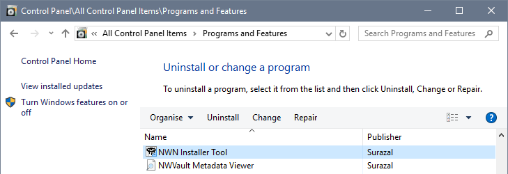
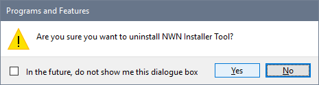
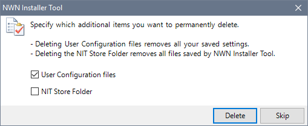

Uninstall the Installer Tool program
- Use Programs and Features in the Control Panel to uninstall the Neverwinter Nights Installer Tool program. For Windows 10, click NWN Installer Tool in the Apps & Features list to get to Programs and Features.

- Click NWN Installer Tool and, if required, answer Yes to the confirmation message.

- You can permanently delete the User Configuration files containing your Settings and the NIT Store folder, which holds your Mod definitions as well as any downloaded files.

- The Installer Tool's program files and Start menu items are removed from your system.
Manually remove the Installer Tool's configuration files
This step is only necessary if you did not delete the User Configuration files when you uninstalled NIT via Programs and Features.
- Open Windows File Explorer.
- Ensure that hidden files are visible by clicking Options from the View tab.

- Open the Surazal folder in your AppData directory (you can paste C:\users\%USERNAME%\AppData\Local\Surazal into the File Explorer's address bar).

Locate the folder containing the version 5.0's configuration (it starts with NWN_Installer_Tool).
- Delete the folder to remove the Installer Tool's configuration files (user.config).
Manually remove files managed or created by the Installer Tool
This step is only necessary if you did not delete the NIT Store Folder when you uninstalled NIT via Programs and Features.
Follow this procedure if you want to remove all the Mods you managed with the Installer Tool and the associated data files that were created.
- Open Windows File Explorer.
- Navigate to the NIT Store folder you specified when you ran the Tool for the first time (eg E:\NIT Store, \Documents\NIT Store, etc).
- Delete the folder.